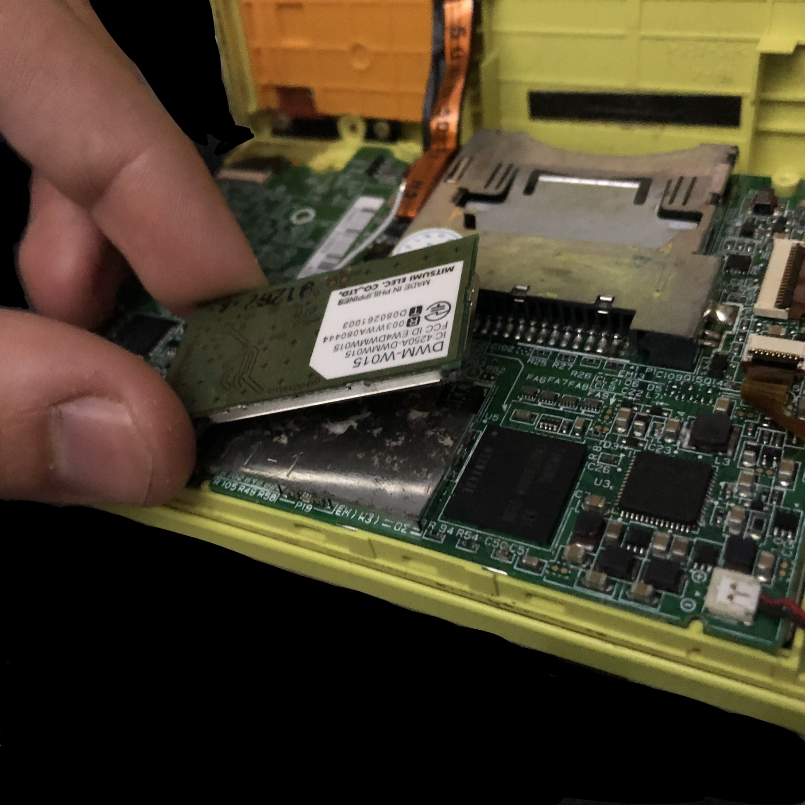

Description
The DSi boots up to black screens.
This can be caused by a missing or damaged WiFi module.
Solution
You will need to install a new WiFi module inside your DSi. Be aware that you will need the
correct WiFi module for your firmware version.
